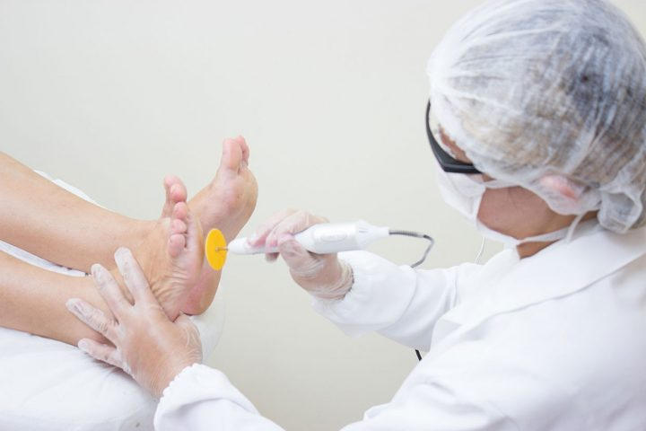
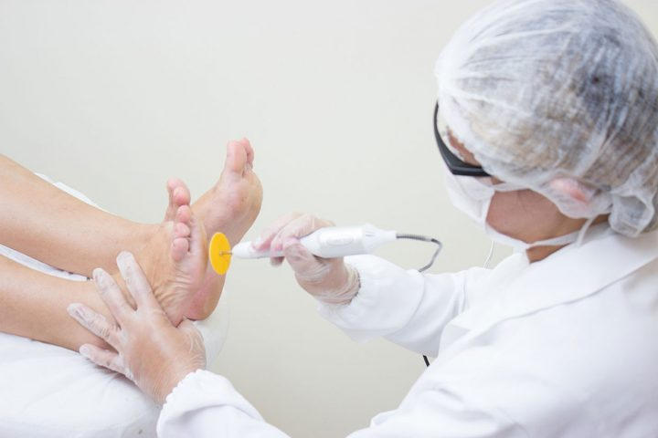

PODOLOGIA MONICA MACHADO
PODOLOGA MONICA MACHADO- conforto e viver com os pes bem cuidados
POR QUE VOCE DEVE IR AO PODOLOGO?
O tratamento com podologa dedica-se a prevenir - e tratar - doencas e problemas nos pes e unhas!
E bem provavel que, em algum momento da sua vida, voce ja tenha sofrido com unhas encravadas, calos, verrugas ou micoses. Esses problemas sao facilmente prevenidos – e tratados – quando se faz um tratamento com podologa.
Dedicar atencao especial aos pes e importantissimo. Eles suportam todo nosso peso e nos possibilitam caminhar, dancar, praticar esportes, correr, entre tantas outras funçoes. E justamente por essa razao, ficam suscetiveis a varios males.
5 motivos para você ir ao podologa:
- Suas unhas serao cortadas corretamente;
- Tratamento de fissuras calcaneas;
- Prevencao para diabeticos;
- Mais qualidade de vida;
- Tratamento de unhas encravadas.
Marque ja seu horario!
Pelo telefone:
(51) 99271-8429 (Monica)
ENDERECO:
Rua Deputado Ataide Pacheco, 225 - Centro, Sapucaia do Sul - RS
horario de Funcionamento:
Terca-feira a Sabado
das 09h00 ás 19h00
 
